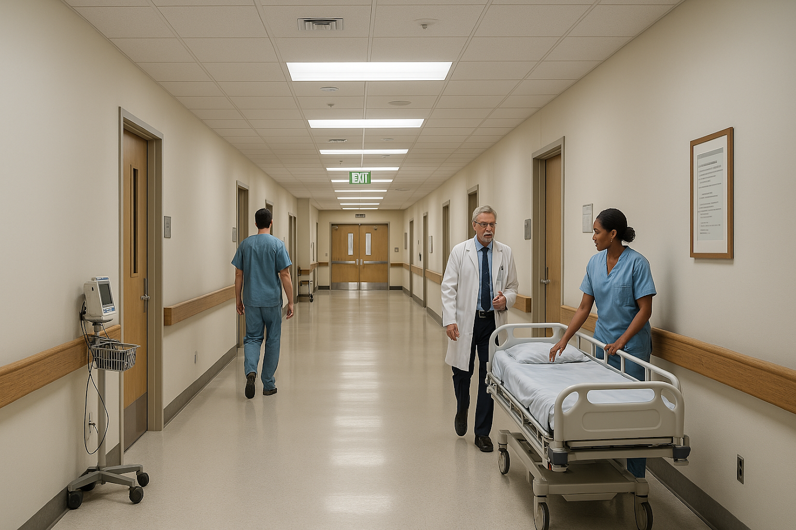

Dove innovazione e cura si incontrano per il benessere di tutti. Con una squadra di professionisti dedicati e tecnologie all’avanguardia, il Neo Garibaldi Hospital è il punto di riferimento per la salute e la sicurezza della comunità catanese. Qui, ogni paziente è al centro dell’attenzione, con servizi di eccellenza e un ambiente pensato per il comfort e la serenità. Benvenuti in un luogo dove la medicina è passione, e il futuro è già presente.


I Nostri Medici